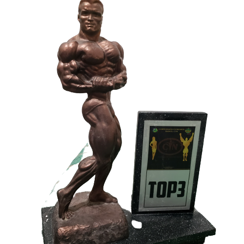
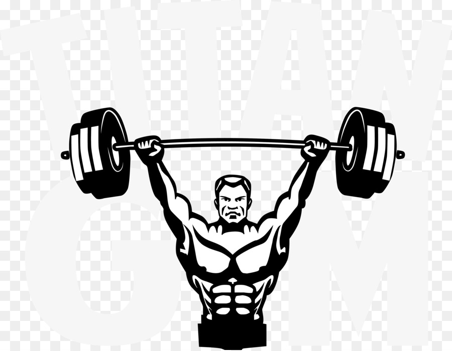
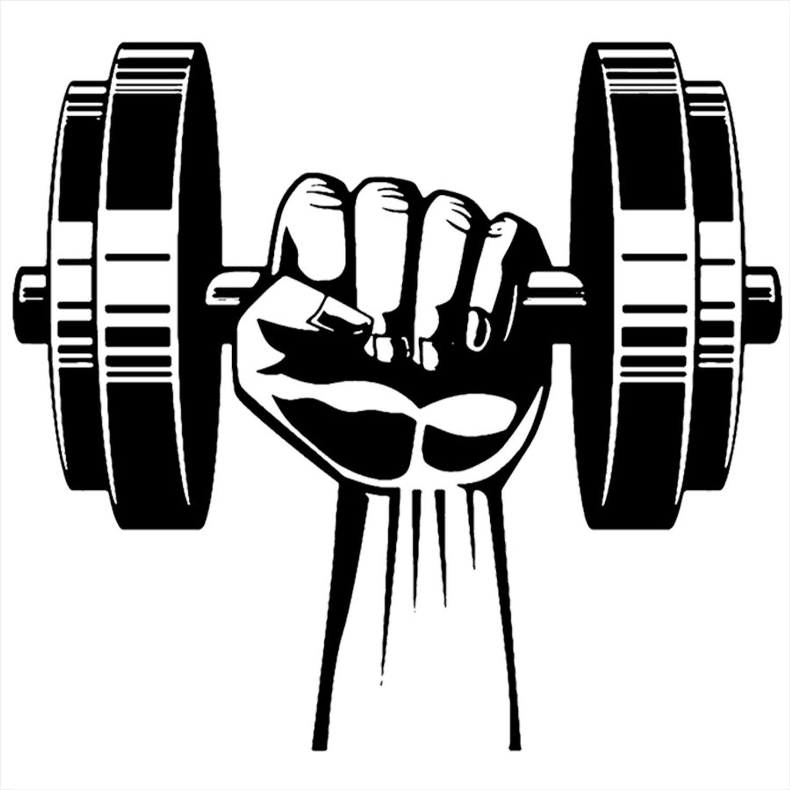

A vida como desenvolver iniciou-se em junho de 2021, e desde o primeiro contato com o mundo da programação eu vir algo que me encantava.
E que diferente daqueles cursos que se iniciava e logo desistia por percebe que não era bem
E que diferente daqueles cursos que se iniciava e logo desistia por percebe que não era bem o que eu queria, bom com a programação foi diferente conforme fui estudando e conhecendo mais e mais sobre , mais eu queria.
Então continuo estudando e trabalhando mais e mais para me aperfeiçoa e me torna um grande DeV.
Além disso meu hobby com a musculação iniciava-se com os meus 14 anos.
Meu primeiro contato com este mundo aconteceu devido outro esporte, futebol, como a maioria das crianças era o sonho se torna jogador de futebol, e devido ser muito magro resolvi entrar na academia para ir ganhando mais força e resistencia, pois não da para ser baixo e magro. bom, e apartir desse momento que nasce uma essa paixão pela musculação
experiencia
No mundo da programação tenho pouca mais de um ano desde o meu primeiro contato, onde venho estudando e fazendo trabalhos pessoais e interpesoais voltados para linguagem front.

Mas, dentro da musculação já tenho um bom e longo tempo, 8 anos, dentre esse periodo já disputei campeonatos fitness, onde alcancei uma terceira posição.
  contatos
- TEL: (74) 98813-3328
- E-MAIL:bdsagnes@gmail.com
habilidades
Projetos
em breve